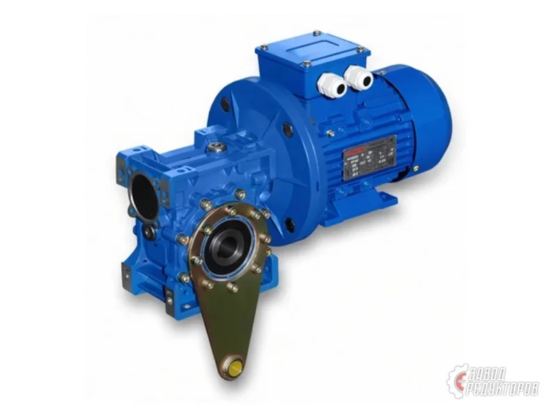
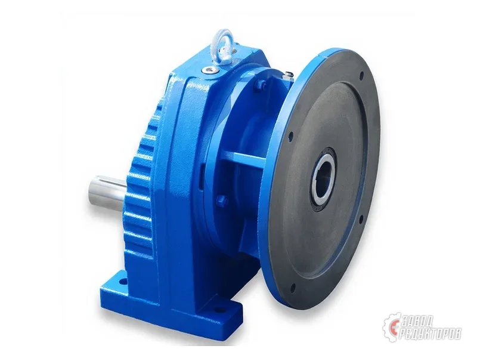
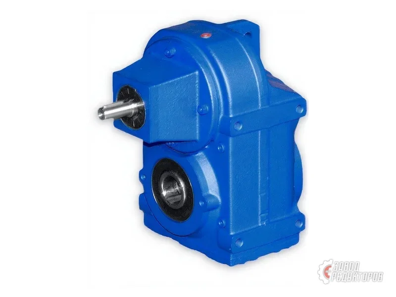
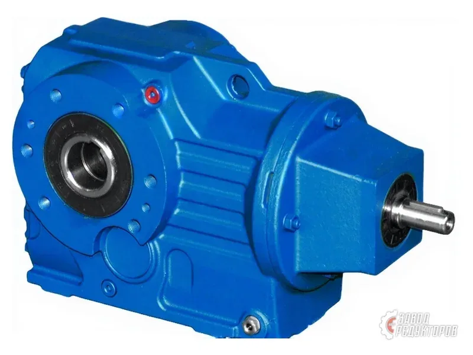
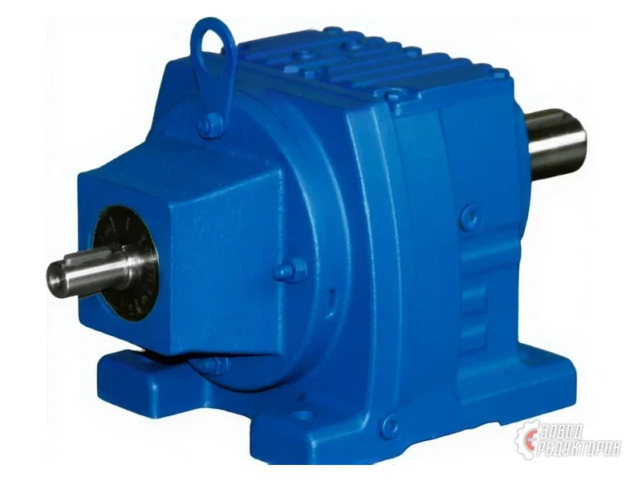

ZR 603под заказчервячный · ПР 430Мотор-редуктор ZR 603 · ПР 430
0,06–0,25 кВт17,5–373,3 об/минi 7,5–80≈ Motovario, SEW EURODRIVE
Цена: по запросуПодробнее →
Полный диапазон мощности общепромышленных приводов: от 0,12 кВт для дозаторов и задвижек до 200 кВт для дробилок и тяжёлых конвейеров. Подбираем по моменту и оборотам, а не только по киловаттам — от этого зависит типоразмер.

Мощность — первый параметр, по которому сужают поиск привода, но выбирать редуктор только по киловаттам нельзя: одна и та же мощность при разных оборотах даёт совершенно разный крутящий момент, а именно момент определяет типоразмер. Наш диапазон — от 0,12 до 200 кВт, и он перекрывает почти весь общепромышленный спрос: от маломощных приводов дозаторов и задвижек до тяжёлых конвейеров и дробильного оборудования. Ниже — как распределяются диапазоны по задачам и почему рядом с мощностью всегда нужно указывать обороты.
| Мощность | Типичные задачи | Чаще всего подходят |
|---|---|---|
| 0,12–0,75 кВт | Дозаторы, задвижки, малые мешалки, лабораторное и фасовочное оборудование | Червячные ZR 603–6015, соосные ZR 939–9169 малых габаритов |
| 1,1–4 кВт | Рольганги, небольшие конвейеры, насосы, упаковочные линии | Червячные ZR 603–6015, соосно-цилиндрические ZR 939–9169 |
| 5,5–15 кВт | Ленточные конвейеры средней длины, шнеки, смесители, вентиляция | Соосно-цилиндрические ZR 939–9169, плоские ZR 959–989, конические ZR 838–8188 |
| 18,5–45 кВт | Тяжёлые конвейеры, элеваторы, грануляторы, насосные станции | Коническо-цилиндрические ZR 838–8188, цилиндрические ZR 959–989 |
| 55–200 кВт | Дробилки, мельницы, тяжёлые металлургические и горные приводы | Цилиндрические ZR 959–989, планетарные исполнения |
Таблица даёт ориентир, а не готовое решение: при низких выходных оборотах даже небольшая мощность требует крупного типоразмера, потому что момент растёт обратно пропорционально оборотам.
Крутящий момент на выходном валу зависит от мощности и оборотов одновременно. Привод на 4 кВт при 200 об/мин и привод на 4 кВт при 20 об/мин — это разные редукторы, отличающиеся габаритом в несколько раз. Поэтому при подборе всегда нужны минимум два числа: мощность (или требуемый момент) и рабочие обороты на выходе. Третье важное число — сервис-фактор: запас на характер нагрузки, число пусков в час и продолжительность работы. Для плавной нагрузки берут 1,25–1,4, для ударной и реверсивной — от 1,6 и выше.
Проще всего задать диапазоны в калькуляторе подбора: он фильтрует базу типоразмеров по мощности, оборотам, моменту и передаточному числу одновременно и показывает подходящие позиции с импортными аналогами. Если известна только мощность двигателя и тип механизма — пришлите эти данные, инженер посчитает момент и предложит вариант. Когда меняется существующий привод, быстрее всего работает фото шильдика: по нему определяется всё сразу.
Мотор-редуктор поставляется в сборе с электродвигателем, редуктор — отдельным узлом под вашу мотор-раму или муфту. Двигатели общепромышленного исполнения на 380 В подбираем по мощности и монтажному исполнению; при работе с частотным преобразователем учитываем диапазон регулирования и необходимость принудительного охлаждения. Подробнее — в разделе электродвигателей и на странице мотор-редукторов 380 В.
Выбрав диапазон мощности, уточните тип передачи под задачу: червячные при необходимости самоторможения, соосно-цилиндрические для компактной встройки, коническо-цилиндрические при угловой компоновке, цилиндрические и планетарные для тяжёлых режимов. Если заменяете импортный привод, начните со страницы импортозамещения — там таблица соответствия серий.
Пришлите параметры или фото шильдика — инженер подберёт типоразмер и пришлёт расчёт с ценой и сроком в течение 15 минут.
Получить расчётОт 0,12 до 200 кВт. Нижняя граница — приводы дозаторов, задвижек и малых мешалок, верхняя — дробилки, мельницы и тяжёлые металлургические приводы. Внутри диапазона доступны все основные типы передач: червячные, соосно-цилиндрические, плоские, коническо-цилиндрические, цилиндрические и планетарные.
Только мощности недостаточно. Момент на выходном валу зависит от мощности и оборотов одновременно: привод на 4 кВт при 200 об/мин и при 20 об/мин — это редукторы разного габарита. Нужны минимум два числа: мощность или требуемый момент и рабочие обороты на выходе. Третье — характер нагрузки, он задаёт сервис-фактор.
Это коэффициент запаса, на который умножается расчётный момент. Он учитывает характер нагрузки, число пусков в час и продолжительность работы за сутки. Для плавной нагрузки берут 1,25–1,4, для ударной, реверсивной и работы с частыми пусками — от 1,6. Без запаса привод работает на пределе и быстро выходит из строя.
Зависит от длины трассы, массы груза, скорости ленты и угла наклона. На практике небольшие рольганги и короткие конвейеры закрываются 1,1–4 кВт, средние ленточные — 5,5–15 кВт, тяжёлые и наклонные — от 18,5 кВт. Точный расчёт делает инженер по параметрам трассы — пришлите их в заявке.
Да. Мотор-редуктор поставляется в сборе с электродвигателем общепромышленного исполнения на 380 В, подобранным по мощности и монтажному исполнению. Отдельный редуктор без двигателя тоже поставляем — под вашу мотор-раму или муфту.
Диапазон регулирования и необходимость принудительного охлаждения двигателя на низких оборотах. При длительной работе значительно ниже номинальных оборотов собственная вентиляция двигателя перестаёт справляться, и нужен независимый вентилятор. Укажите в заявке, что привод работает с частотником, и требуемый диапазон.
Задайте диапазоны в калькуляторе подбора: он фильтрует базу типоразмеров по мощности, оборотам, моменту и передаточному числу одновременно и сразу показывает импортные аналоги к каждой позиции. Результат справочный — точный подбор под нагрузку подтверждает инженер.
Стандартный ряд заканчивается на 200 кВт. Задачи выше этого диапазона рассматриваем индивидуально: возможны специальные исполнения или схемы с несколькими приводами. Опишите задачу в заявке — инженер оценит выполнимость и предложит вариант.
Подбор и коммерческое предложение — в течение 15 минут после получения параметров. Ходовые типоразмеры отгружаем со склада или из текущего производства, нестандартные исполнения изготавливаем под заказ. Доставка по всей России, гарантия 36 месяцев.
Технические характеристики по группам ZR: диапазоны мощности, выходных оборотов и передаточного числа. Цены — по запросу, расчёт и подбор выполняет инженер.

ZR 603под заказ
ZR 636под заказ
ZR 838под заказ
ZR 979/939под заказПоставка по России — Екатеринбург, Казань, Самару, Воронеж и остальные регионы. Точный срок называем при расчёте: он складывается из наличия позиции и тарифа транспортной компании.
Самовывоз — с производства в Челябинске. Отгружаем транспортными компаниями; по согласованию отправляем своим транспортом.